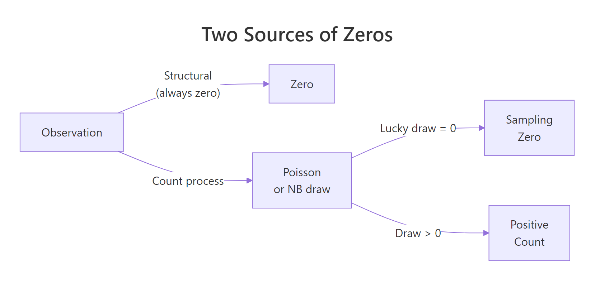
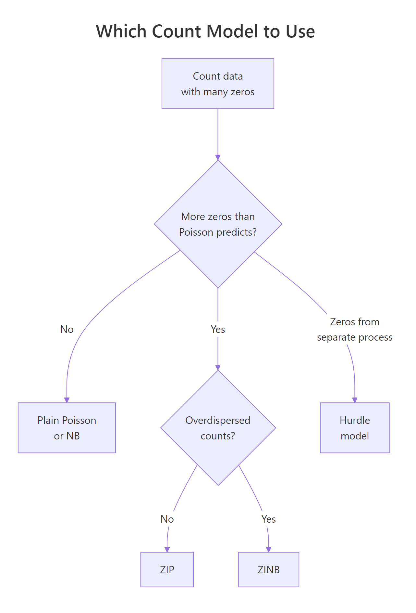

Zero-Inflated Distributions in R: Handle Excess Zeros in Count Data
Zero-inflated distributions model count data that has far more zeros than a plain Poisson or negative binomial would expect. You fit them in R with pscl::zeroinfl(), which couples a logistic model for the "always zero" process with a count model for the rest.
When do you need a zero-inflated model?
Lots of real count data is weird in one specific way: there are way more zeros than any standard model predicts. Insurance claims per policy, articles published per PhD student, fish caught per park visitor, each has a cluster of people who produce zero no matter what. The fastest check is quantitative: fit a plain Poisson, ask how many zeros it would predict, and compare that to what you actually see. When the gap is large, the plain Poisson is not just wrong about the zeros, it's biased across the whole fitted curve.
The data has 308 zeros, but a plain Poisson fitted to the same mean expects only about 146. The ratio is roughly 2x, clear zero inflation. Keep that ratio in mind: anything above ~1.5 should make you reach for a zero-inflated or hurdle model rather than a vanilla Poisson fit.
Try it: Drop the structural-zero probability from 0.6 to 0.3 and re-measure the zero-excess ratio. You should see the ratio fall but still sit clearly above 1.
Click to reveal solution
Explanation: Fewer structural zeros means less inflation. The ratio tracks the structural probability directly, it shrinks toward 1 as that probability goes to 0.
What causes excess zeros, structural vs sampling?
A zero-inflated distribution assumes two separate mechanisms produce zeros. Some observations are structural zeros, they can never produce a positive count. A subscriber who doesn't own the product will report zero purchases this month and every other month. Other observations go through the count process and happen to draw zero, these are sampling zeros. A subscriber who does own the product may simply not have purchased anything this month.
Mathematically, the mixture is:
$$P(Y = 0) = \pi + (1 - \pi)\,e^{-\lambda}$$
$$P(Y = k) = (1 - \pi) \cdot \frac{\lambda^k e^{-\lambda}}{k!}, \quad k = 1, 2, 3, \ldots$$
Where:
- $\pi$ = probability an observation is a structural zero (the "zero-inflation" probability)
- $\lambda$ = Poisson mean for the count process
- $Y$ = observed count
The first term of $P(Y=0)$ is the structural-zero mass; the second is the ordinary Poisson zero. Both contribute to the zeros you see in the data.
The 382 observed zeros are made up of 284 structural (about 28% of the sample) plus 98 that came from the count process drawing zero. Crucially, after the indicator collapses, you can't tell them apart by eye, the structural zero and the sampling zero look identical in y. That's exactly what the model has to estimate.

Figure 1: The mixture mechanism behind zero-inflated distributions. Every observation is either a structural zero or a draw from the count process, which may itself land on zero.
Try it: Keep pi at 0.3 but raise lambda from 2 to 5. Predict what happens to the sampling zero count before you run the code, then check.
Click to reveal solution
Explanation: At $\lambda = 5$, the Poisson puts almost no mass at zero, so the count process rarely produces a zero. Almost every zero you see is now structural.
How do you fit zero-inflated Poisson with zeroinfl()?
The pscl package ships the bioChemists dataset, publication counts for 915 biochemistry PhD students in their last three years of the program, which is the canonical teaching dataset for zero-inflated models. Many students published zero articles. The predictors include gender (fem), marital status (mar), number of young children (kid5), PhD prestige (phd), and mentor productivity (ment).
About 30% of the sample published zero articles, an obvious candidate for zero inflation. Now fit the ZIP model. The formula uses a pipe (|) separator: predictors to the left drive the count process, predictors to the right drive the zero-inflation process.
The output has two blocks. The count model describes what drives the Poisson rate among non-structural observations: being a woman lowers the rate, young kids lower the rate, and mentor publications raise it. The zero-inflation model describes what makes an observation more likely to be a structural zero: only ment is significant, students with less-productive mentors are far more likely to be in the "will not publish at all" group. Intercepts are on the log and logit scales respectively.
| separator lets you specify a minimal zero-inflation model (say, just ment) alongside a fuller count model. That often fits better and is easier to interpret.Exponentiating the coefficients makes the count side easier to read as incidence rate ratios (IRRs) and the zero side as odds ratios.
Among publishing students, women publish at 0.81x the rate of men (a 19% lower rate); each additional child under five drops the rate by 13%; each extra mentor publication adds 1.8% to the rate. On the zero side, each extra mentor publication multiplies the odds of being a structural zero by 0.875, about a 13% drop per unit, which matches the intuition that productive mentors pull students out of the "never publishes" group entirely.
Try it: Fit a ZIP model where the zero-inflation side uses only ment, while the count side keeps all five predictors. Compare the log-likelihood to m_zip.
Click to reveal solution
Explanation: Dropping four non-significant zero-inflation predictors costs ~2 log-likelihood units across 4 degrees of freedom, no worse by AIC. The sparser model is the right choice here.
How do you choose between ZIP, ZINB, and hurdle models?
Zero inflation and overdispersion (variance larger than the mean) are different problems that often show up together. A ZIP model handles excess zeros but still assumes the non-structural counts are Poisson, so variance equals mean. When the non-zero counts are overdispersed too, you want a zero-inflated negative binomial (ZINB) instead. If you suspect the zero-generating process is categorically different from the count process (think: visiting a park at all vs how many fish you caught given you went), a hurdle model may fit better.
ZINB beats ZIP by ~63 AIC points, and ZIP beats plain Poisson by ~80. The ordering is the usual one: adding a zero-inflation component buys a large chunk of fit, and allowing the count variance to exceed the mean buys another. A difference of more than 10 AIC units is "strong evidence" territory.

Figure 2: Decision flow for choosing between Poisson, NB, ZIP, ZINB, and hurdle models based on zero excess and overdispersion.
A second diagnostic is the predicted zero count. A well-fitting model should predict about as many zeros as you observed.
Plain Poisson under-predicts by 60+ zeros. Both ZIP and ZINB nail the observed count, as expected, since both have an explicit zero-inflation component. AIC then breaks the tie in favor of ZINB because of the non-zero counts.
Try it: Using predict(m_zinb, type = "prob"), find the observation with the highest estimated probability of being a structural zero. What are its covariates?
Click to reveal solution
Explanation: Highest structural-zero probability (~67%) is a woman with three young children and a mentor with zero publications, exactly the profile the model flagged via the ment coefficient.
Practice Exercises
Exercise 1: Trimmed ZINB
Fit a ZINB on bioChemists using only ment and kid5 on the zero-inflation side, while keeping all five predictors on the count side. Compare its AIC to the full m_zinb. Which model wins and by how much? Store your trimmed model in my_zinb_trim.
Click to reveal solution
Explanation: Dropping three non-significant zero-inflation predictors saved four degrees of freedom and lowered AIC by ~4. Simpler wins, that's what AIC rewards.
Exercise 2: Simulate ZINB, fit both, pick the winner
Simulate 1000 counts from a zero-inflated negative binomial process: structural probability = 0.4, non-zero counts drawn from a negative binomial with mean 5 and size = 2 (moderate overdispersion). Fit both ZIP and ZINB on a single predictor. Use AIC() to pick the winner. Store the simulated counts in my_y and the two fits in my_zip and my_zinb_fit.
Click to reveal solution
Explanation: ZINB wins by ~1400 AIC. ZIP cannot absorb the overdispersion from size = 2, so it inflates its log-likelihood penalty badly. Whenever you suspect variance much larger than mean, try ZINB before settling on ZIP.
Complete Example: Park Fishing Counts
Here's a full walkthrough, simulate, explore, fit, diagnose, interpret, on a fishing-visitor dataset. Some groups never fished (structural zero), some fished but caught nothing (sampling zero), and a few did well.
ZIP wins by ~2 AIC units over ZINB, the non-zero counts are Poisson-dispersed enough that the extra parameter in ZINB isn't worth it. Both the count and zero components recover the simulation truth: the kids coefficient is negative on the count side and positive on the zero side, meaning families with children both fish less and are more likely to never fish at all. That's the value of the two-part model, one variable can affect both "will this happen at all?" and "how much if it does?" with different effect sizes.
Summary
| Concept | Takeaway | |
|---|---|---|
| When to use ZI | Observed zeros exceed what a plain Poisson/NB predicts by >1.5x | |
| Two-component mixture | Structural zeros (always) + sampling zeros (Poisson/NB draws) | |
zeroinfl() syntax |
`y ~ count_preds \ | zero_preds, dist = "poisson" or "negbin"` |
| ZIP vs ZINB | Use ZINB when non-zero counts are overdispersed (AIC separates them) | |
| Diagnostic check | Compare observed zeros to predicted zeros from each model | |
| IRR and OR | exp(coef()) gives incidence rate ratios (count) and odds ratios (zero) |
|
| Hurdle alternative | Use when zero process is conceptually separate from the count process |
References
- Zeileis, A., Kleiber, C., Jackman, S., Regression Models for Count Data in R. Journal of Statistical Software (2008). Link
- Lambert, D., Zero-Inflated Poisson Regression, with an Application to Defects in Manufacturing. Technometrics (1992). Link
- pscl package,
zeroinflreference documentation. Link - UCLA OARC, Zero-Inflated Poisson Regression (R Data Analysis Examples). Link
- Cameron, A. C., Trivedi, P. K., Regression Analysis of Count Data, 2nd ed. Cambridge University Press (2013).
- Hartig, F., DHARMa package, Residual diagnostics for hierarchical (multi-level / mixed) regression models. Link
- R Core Team,
stats::glmreference. Link
Continue Learning
- Binomial & Poisson Distributions in R, the count models that zero inflation extends.
- Geometric & Negative Binomial Distributions in R, the overdispersion-friendly count family behind ZINB.
- Logistic Regression With R, the logit model that drives the zero-inflation component.